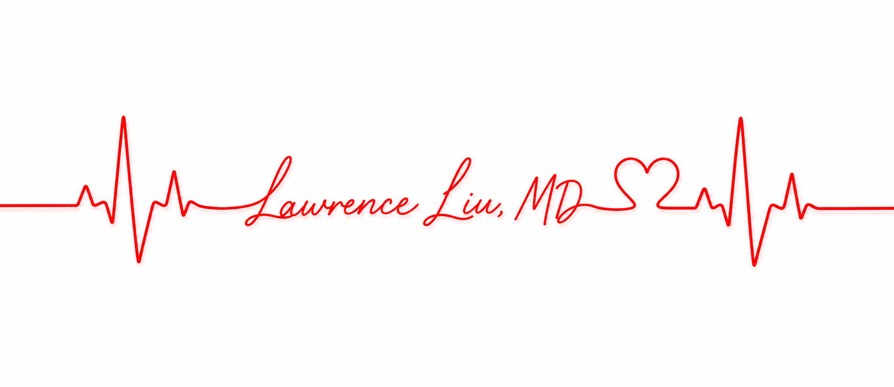
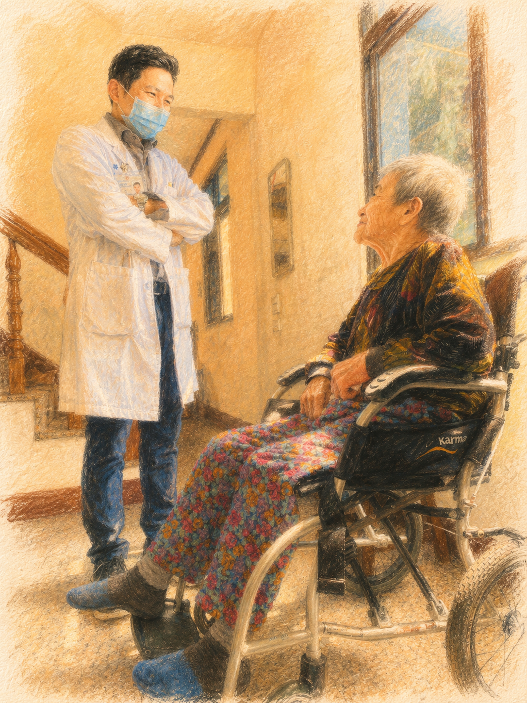

劉俞旻 醫師 Cardiology · Hsinchu 線上掛號→
劉俞旻醫師，新竹馬偕紀念醫院心臟內科暨心血管中心主任。
在這裡，您可以閱讀以最新國際指引為依據的衛教資訊與醫療進展，
了解心臟疾病、預防與治療選擇。

心臟科與相關醫學領域最新藥物、治療進展與研究發現
美國 ACC/AHA 八年來首度大改版——從 Lp(a) 篩檢、新風險計算工具，到 PCSK9 抑制劑成為標準階梯，八個改變直接影響您的治療。
Read full article →NEJM 2026 韓國 3,048 人隨機試驗：LDL < 55 比 < 70 mg/dL 多減少 33% 重大心血管事件，副作用相當——亞洲人的直接證據。
Read full article →新一代化療與標靶藥物可能造成心肌損傷。腫瘤心臟病學門診提供病人完整的心血管風險評估與長期追蹤。
Read full article →用淺顯易懂的語言，介紹心臟疾病的成因、症狀、治療與日常照護
「每一個治療決定，都應該來自當下最好的證據——以及對眼前這位病人的理解。」
長年深耕心導管介入手術、心臟衰竭治療、腫瘤心臟病學與再生醫學， 擔任多項國際大型臨床試驗共同研究員，致力於將最新實證醫學成果帶給每一位病患。